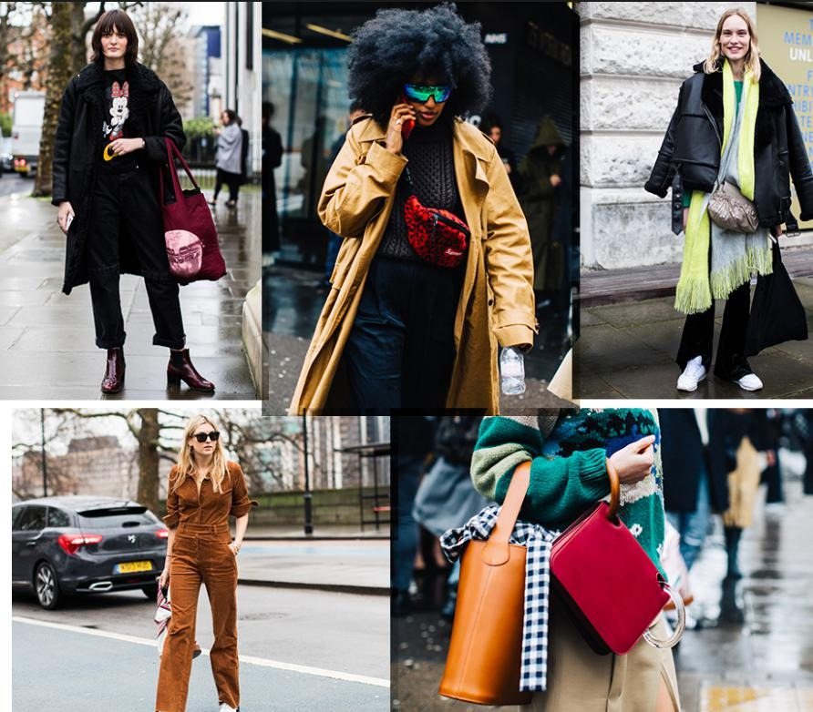

Trucuri legate de moda
Oricare ar fi stilul tau de viata, hainele pe care le porti iti influenteaza increderea in tine insati si modul
in care percepi lucrurile. Nu trebuie sa fii o cunoscatoare a modei pentru a-ti cunoaste trupul si sa
intelegi ce arata bine pe tine. Cele mai multe dintre femei se bazeaza pe hainele, stilurile si culorile
cu care se simt bine si care cred ca le infrumuseteaza. Este bine sa iti aduci aminte de experientele
anterioare. Ai incredere in intuitia ta.Iata 10 sfaturi de styling propuse pentru alegerea
unor tinute de efect, care avantajeaza orice silueta si orice stil:
1. Purtati haine cu personalitate , dar in combinatie cu piese vestimentare clasice! De pilda, un palton
intr-o nuanta puternica poate scoate din anonimat o tinuta clasica, in culori neutre.
2. Tinutele simplu nu dau gres aproape niciodata. Clasica little black dress ar trebui sa existe in
garderoba oricarei femei. Tot asa cum ar trebui sa exista si camasa alba, jeansii casual sau pantofii cu toc
mic. Stiti voi… asa numitele ”piese de rezistenta” ale unei garderobe.
3. Alegeti piese in culori deschise in partea superioara. Acestea vor atrage atentia asupra partii de sus,
punand, astfel, in evidenta trasaturile fetei.
4. Cea mai buna alternativa pentru o vreme capricioasa ca cea de afara? Alegeti o tinuta formata din
piese lejere, iar deasupra folositi o haina extrem de calduroasa, pe care o puteti da jos oricand.
5. Daca va plac culorile puternice, dar nu stiti cum sa le purtati astfel incat sa nu dati gres, solutia este
acum la indemana voastra: asezati culoarea preferata langa o piesa intr-o culoare neutra (de exemplu,
verde langa gri, albastru langa alb, rosu langa negru, etc).
6. Nu va simtit aventuroase in materie de fashion? Puteti alege o tinuta formata din piese in culori
neutre, la care sa adaugati accesorii in culori tari, electrice.
7. Este necesar ca din cand in cand sa incercati ceva nou. Doar asa va evolua stilul vostru vestimentar!
8. Folositi cu incredere accesoriile! Acestea va vor ajuta sa dati credibilitate tinutei voastre.
9. Exagerati vestimentar, daca aveti ocazia. O haina de blana oversized sau dintr-un material deosebit, in
combinatie cu o pereche de jeansi si incaltaminte cu varf ascutit pot forma un outfit de invidiat,
daca este purtat in contextul potrivit, bineinteles!
10. Nu il ultimul rand, TU TREBUIE SA PORTI HAINELE, NU ELE PE TINE!
